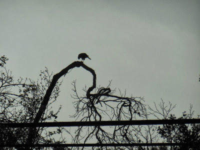
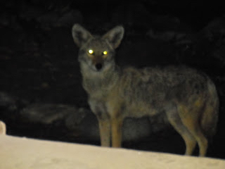
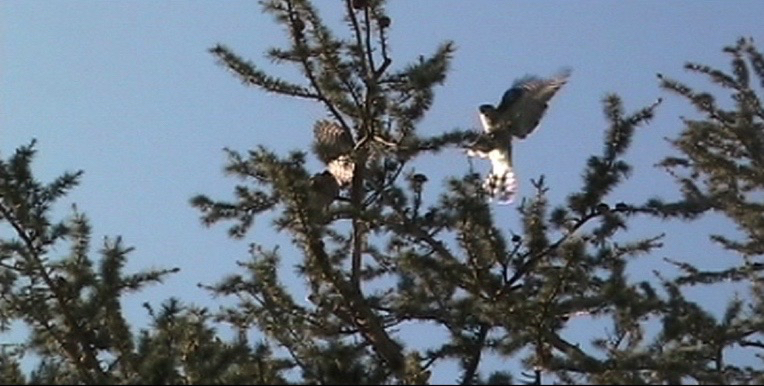
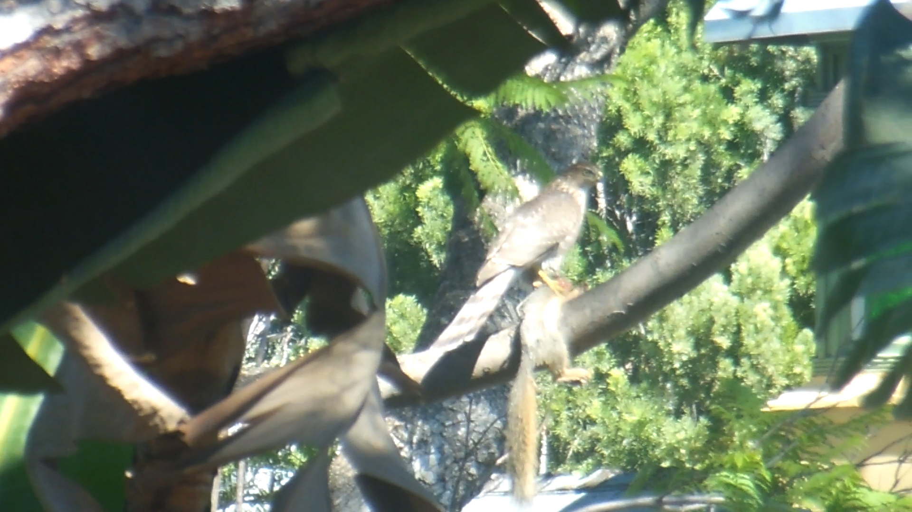
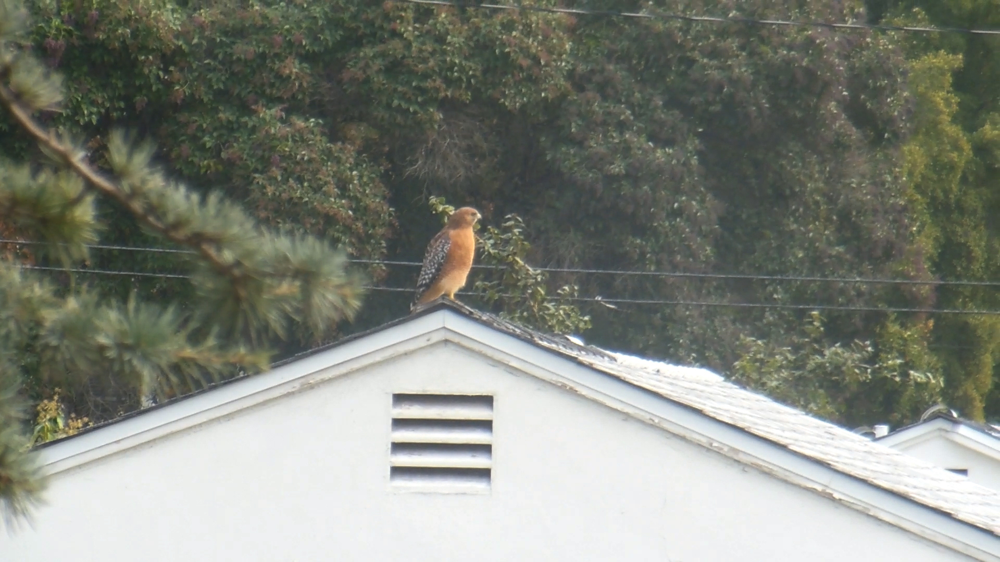
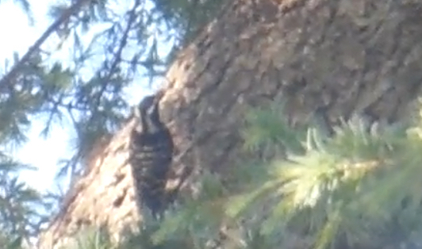
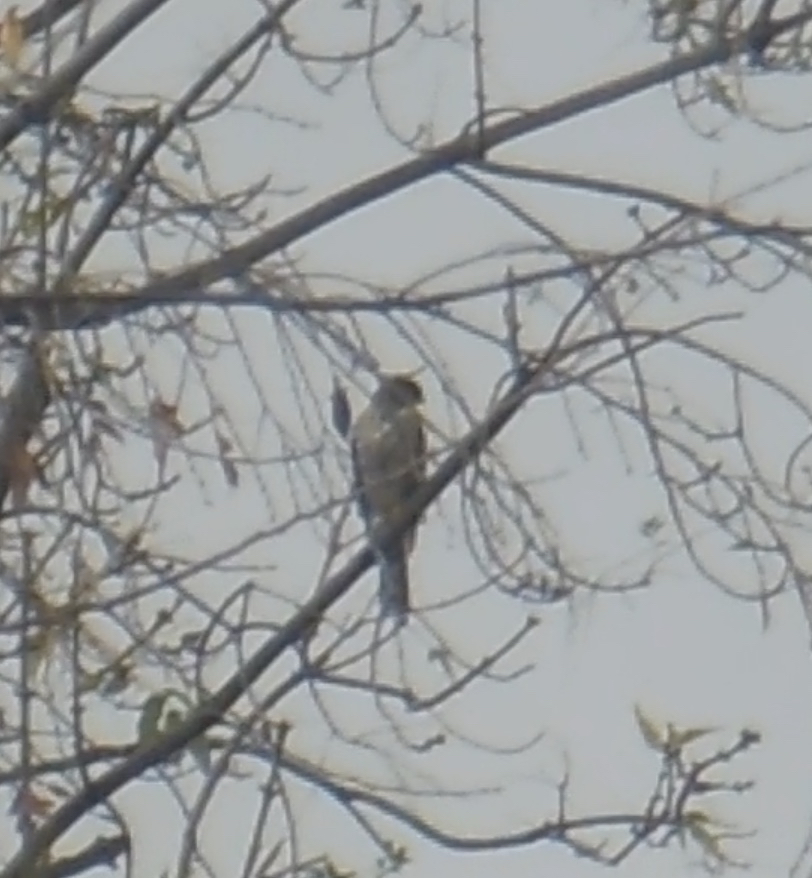
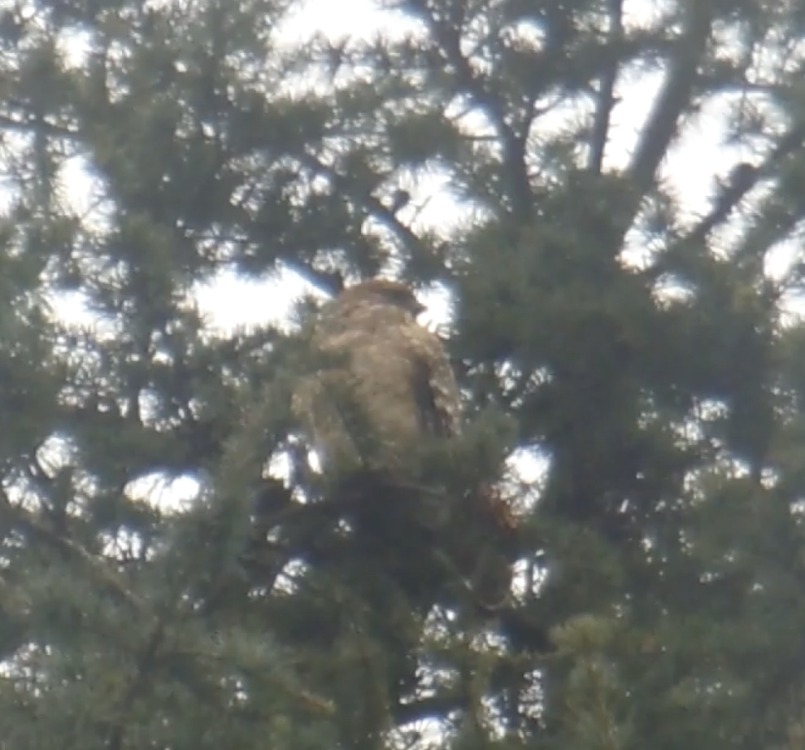
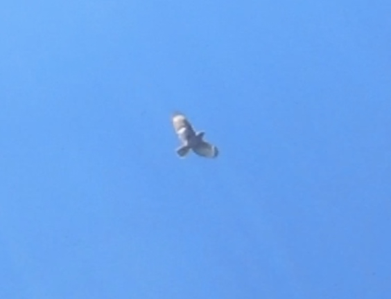

Key Appearances, Plate 01 Cooper Hawk April 19, 2013 Looking Due West From Front Yard

Plate 02 Coyote May 22, 2015 10:30 PM Looking South West From North Front Yard

Plate 03 Sibling Pair of Cooper Hawks July 10, 2015 5:45 PM Looking West From East Back Yard

Plate 04 Cooper Hawk With Squirrel Oct 6, 2016 about 1:20 PM Looking North East From West Backyard

Plate 05 Red and Black Hawk Dec 5, 2016 11:00 AM Looking East From West Backyard

Plate 06 Woodpecker April 29, 2017 4:08 PM Looking North East From West Backyard

Plate 07 December 27, 2018 Looking West from the front of the house, a Cooper's hawk in a tree about 25 yards South of the tree in which the Cooper's hawk of plate 01 landed.

Plate 08 Jan 5 2019 at 1:35 PM Cooper's hawk in backyard.

Plate 09 12:20 PM on Feb 18 2019 the Cooper's hawk puts in another appearance.
